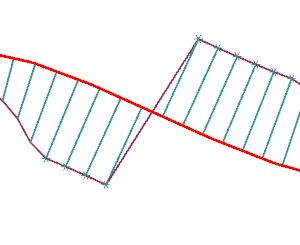
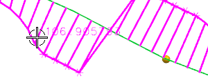
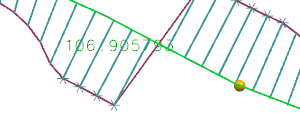

放大样条的中间部分。

在分析显示组中，点击显示针值 。
从标签值列表中，选择曲率半径。
将光标移动到左边最后一个不显示长度限制星号的针上。

选择这个针。

现在，只要分析工具还显示，针值就会一起显示。
注意到显示的值被乘以当前针比例值0.125大约等于13.36，小于您指定的最大长度(15)。
点击确定。
注意到分析显示还继续保留，这是因为它是一个已经创建的对象，它是动态的，如果您编辑了样条，分析工具将动态更新。
您可以像隐藏其它对象一样隐藏它。
您也可以通过在曲线分析对话框中清除显示曲率梳复选框来隐藏分析显示。